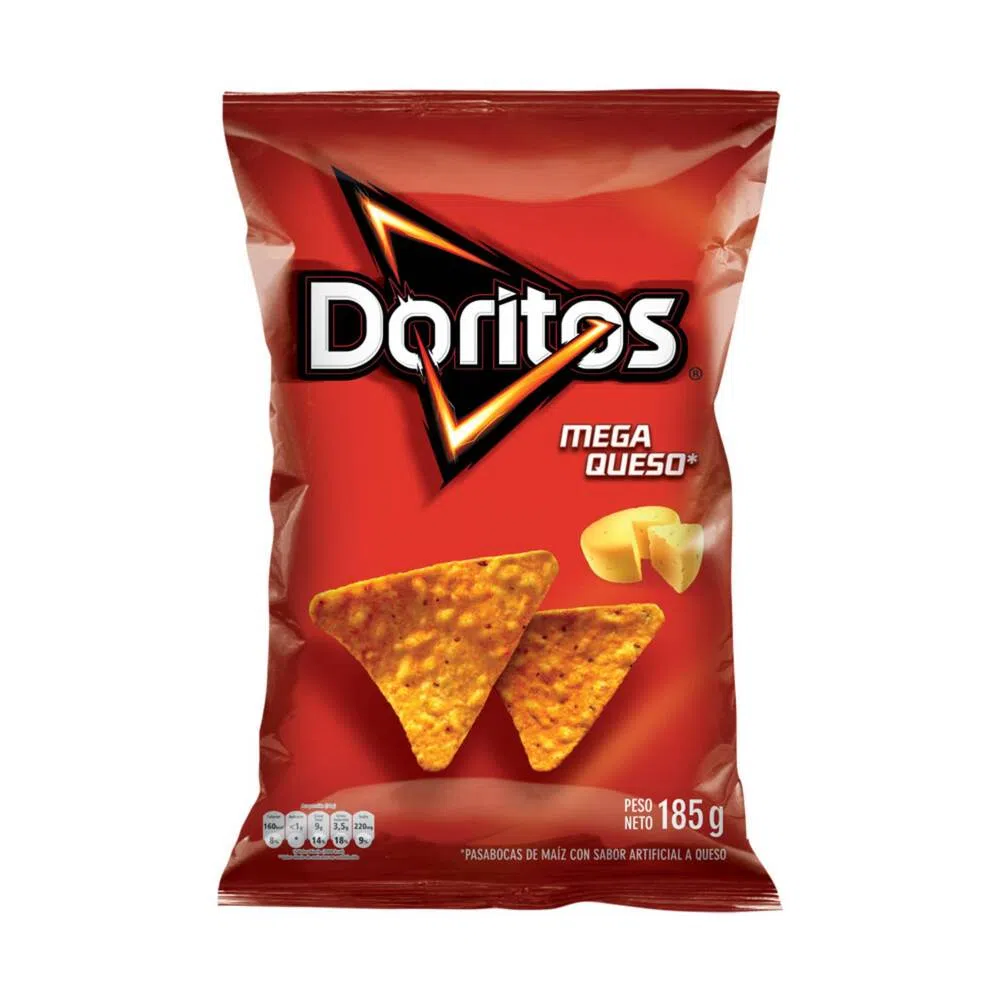

Doritos es una marca de tortilla chip con sabor producidos desde 1964 por la empresa de alimentos estadounidense Frito-Lay. El aperitivo es el tradicional totopo mexicano condimentado, está hecho de tortilla de maíz frita, su forma triangular proviene de la original derivada de rebanar las tortillas
Doritos, gracias a la buena gestión del propio Archibald, es hoy el producto líder de Frito-Lay, con unas ventas anuales de más de 3.600 millones de euros.
Maíz nixtamalizado, aceite vegetal, condimento quesos, almidón, sal yodada, maltodextrina, glutamato monosódico, especias, saborizantes, harina de arroz, chiles, glucosa, harina de trigo, ácido cítrico, inosinato de sodio, guanilato de sodio, azúcar, proteína vegetal hidrolizada, amarillo ocaso FCF, almidón modificado
Teniendo en cuenta la pirámide de Maslow se ubicó que Doritos satisface el nivel de las necesidades fisiológicas, ya que es un alimento. A pesar de considerarse un alimento no nutritivo, muchas personas lo considerán al momento una opción rápida y que satisface los “antojos”